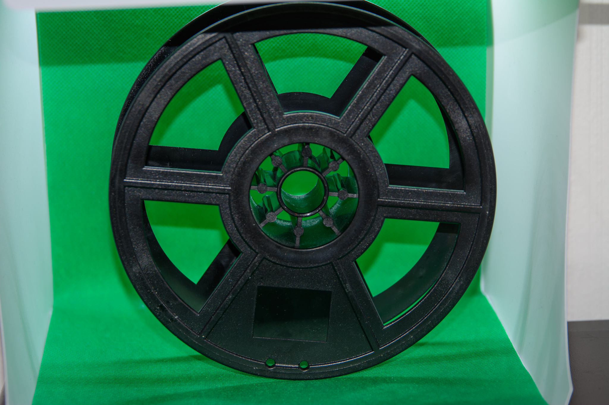

those two black paper-clamps are there in case if i need something to hold the subject if the magnet can't hold it.
I was wondering about how i could find a way to hang my photo-subject in a macro-photograpy setup.
To do so I gather bits and pieces laying around.
This is the final setup. More info along the webpage
in this picture:two metalbrackets 90degree angle with holes.baloons.round magnet (on the top). Wheel piece to fasten magnet.
screws and wing nuts. Black baseplate (plastic). Binder clips (black).Baloons.

I found an empty 3Dprint-ink-reel. Turns out it was perfect for this application.
Two of this is perfect for the lense tilt-adjustments.
That is a door-holder-wedge. It is made of rubber.
those two black paper-clamps are there in case
if i need something to hold the subject if the
magnet can't hold it.
my camera was uneven on the bottom.
so i used ballons to even the camera and to hold it steady.
The reel makes it easyer to move camera twards the subject.
I used remote trigger on my camera.
Practical when you need long expose shutter time.
The top image was a result of vibration i made on the table and long expoure. so i connected the remote release gadget. The last photo is the latest image.